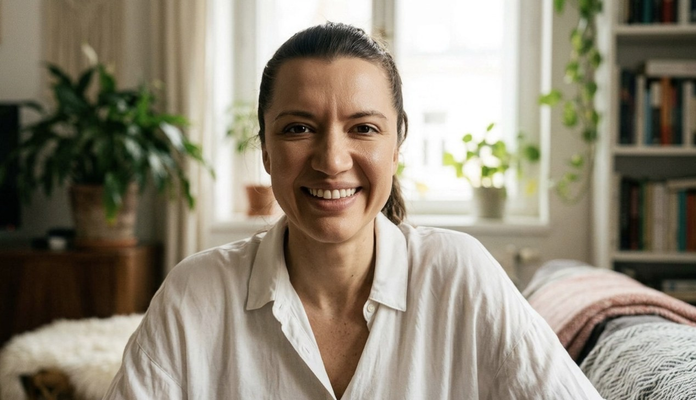
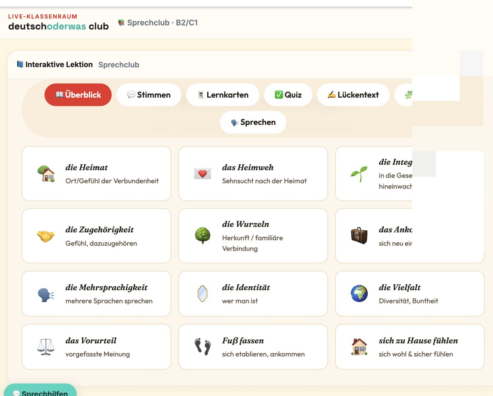
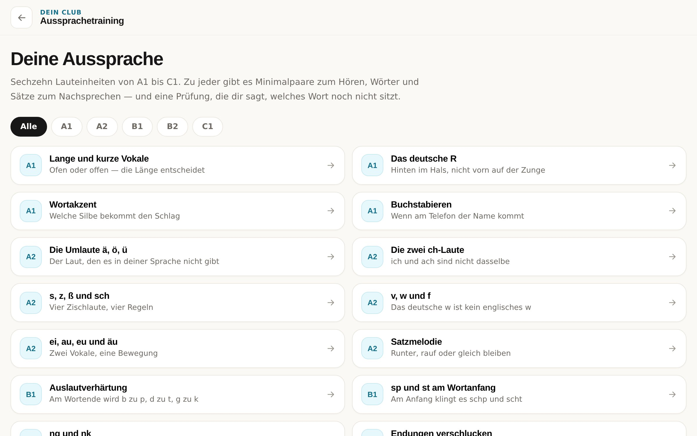
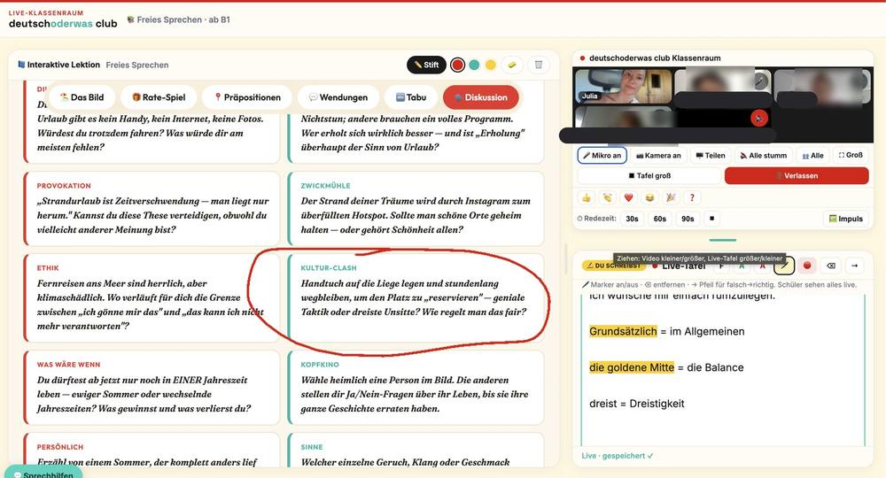
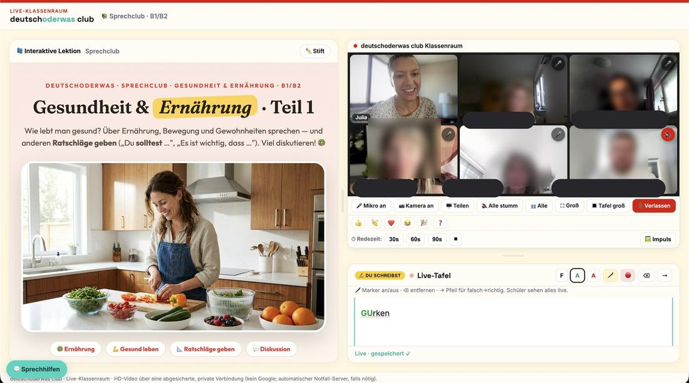

Ab heute: die ganze Lernplattform und Amanda, mit der du jederzeit sprechen übst.


Kurse, Übungen, Prüfungsvorbereitung und Vokabeln — A1 bis C1.

Deine KI-Sprechpartnerin. Ohne Termin, ohne Angst vor Fehlern.

Wie ein Sprachcafé: du kommst und redest. Mo–So um 19 Uhr, in kleinen Runden, mit einem Lehrer.
Wie ein Sprachcafé: du kommst und redest. Mo–So um 19 Uhr, in kleinen Runden, mit einem Lehrer.

Vier neue Folgen am Tag — je eine für A2, B1, B2 und C1. Hören in der Bahn, beim Kochen, vor dem Schlafen. Mit Text zum Mitlesen.
Die Folgen von heute hören„Ich hatte Angst zu sprechen. Jetzt rede ich viel freier — Fehler sind hier normal."
Ana · 🇺🇦 Niveau B1„Kleine Gruppen, viel Sprechzeit. Mein Wortschatz ist deutlich besser."
Ismail · 🇸🇾 Niveau B2„Julia erklärt mit Humor. Ich trau mich endlich zu sprechen."
Maria · 🇧🇷 A2 → B1Community = lernen, wann du Zeit hast. Premium = dazu jeden Abend mit echten Menschen sprechen.
Deine komplette Lernplattform für Deutsch — Üben, Prüfungsvorbereitung, Vokabeltrainer, täglicher Podcast und Amanda rund um die Uhr. Wer möchte, kommt abends in den Sprechclub.
Ja. Als Community-Mitglied lernst du, wann es dir passt — Podcast für unterwegs, Community-Chat für deine Fragen und Amanda rund um die Uhr, ganz ohne Termin. Premium lohnt sich erst, wenn du täglich mit echten Menschen sprechen willst.
Wie ein Sprachcafé: du kommst und redest. Zu zweit oder zu dritt, mit Leuten auf deinem Niveau — ein Lehrer kommt zu euch dazu. Viel Sprechzeit für dich.
Ja, du kannst dir das Vorbereitungsmaterial immer in deinem Schülerbereich anschauen und auch die Präsentation des Unterrichts. Nach dem Unterricht gibt es eine Zusammenfassung des Unterrichts und Übungen dazu.
Nein. Stundenpaket kaufen, kommen wann du willst — jederzeit kündbar.
Genau dafür ist der Club da. Fehler sind willkommen, du startest bei deinem Niveau (A2–C1).
Fang heute an — und sprich bald frei.
Die Warteliste ist für Premium — das startet am 1. November, und die Plätze sind begrenzt. Trag dich ein: Du bist vor allen anderen dabei und wir melden uns persönlich bei dir.
Dann trag dich hier ein — Premium startet am 1. November und die Plätze sind begrenzt.
Die Warteliste ist für Premium — das startet am 1. November, und die Plätze sind begrenzt. Trag dich ein: Du bist vor allen anderen dabei und wir melden uns persönlich bei dir.